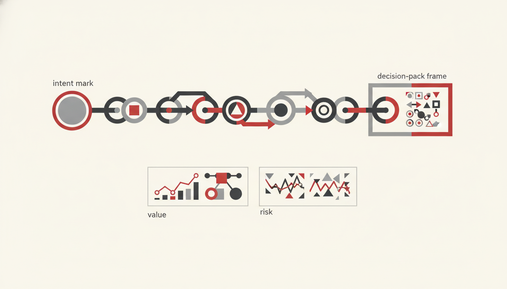

This page is an Effective Agents synthesis for Microsoft-centric estates. It attributes well-known frames by name (Balanced Scorecard thinking, NIST AI RMF concepts, DORA-style caution about metric theatre) without lifting third-party blueprints.
Decision-first packs
Do not start with a metric catalogue. Start with the decision the pack must unlock:
| Decision | Pack answers | Lead metrics (examples) |
|---|---|---|
| Renew / expand licences | Is assisted value beating cost? | Assisted £ vs consumption; activation |
| Scale an agent | Is it healthy and reused? | Resolution, return rate, versatility |
| Pause a pilot | Is maturity stuck on “asking”? | Maturity stage; time-to-outcome |
| Fund enablement | Who is ready but idle? | Readiness scores; active days |
| Accept residual risk | Are gates and escalations working? | Escalation rate; policy incidents |
If a chart does not change one of these decisions, cut it from the pack.
Value beyond P&L
Boards need money stories — and more:
- Throughput — cycle time, backlog burn, cases closed per FTE
- Quality — rework rate, citation accuracy, policy exceptions
- Experience — employee effort, customer wait, CSAT where agents touch service
- Risk & control — audit completeness, DLP hits, shadow-agent count
- Learning — preference volume, eval pass rate, time-to-remediate
Assisted value (hours × rate) is necessary. It is not sufficient.
Balanced lenses
Borrow the spirit of Balanced Scorecard: hold financial, customer/employee, internal process, and learning views in one pack. For agents, map roughly to:
| Lens | Agent-oriented view |
|---|---|
| Financial | Assisted value, licence net, credit burn |
| Stakeholder | Adoption, satisfaction, trust (escalations accepted) |
| Process | Task completion, time-to-outcome, hand-off failures |
| Learning & governance | Eval sets, preference loops, NIST AI RMF–aligned controls |
Unbalanced packs create local optima (e.g. maximising prompts while quality collapses).
One measurement chain

Keep a single spine from telemetry to board story:
Intent (done state)
→ Agent runs (identity, grounding, actions)
→ Telemetry (actions, sessions, outcomes, feedback)
→ Operational KPIs (completion, escalation, health)
→ Value model (hours / assisted £)
→ Decision pack (renew, scale, fix, stop)Break the chain and you get incompatible numbers across CoE, finance, and security.
Tie every KPI to the Effective Agents framework: Intent → Agent → Grounding → Action → Feedback → Governance.
Risk beside performance
Never present green ROI without a risk pane:
- Permission overreach / grounding leakage
- Hallucinated policy used as fact
- Irreversible actions without human gates
- Drift against eval sets
- Unregistered agents (Scout / estate visibility)
Align language to NIST AI RMF categories (map, measure, manage, govern) so risk and performance share a vocabulary with security and audit.
AI evidence gates
Before promoting an agent (or claiming ROI):
- Intent gate — written done state and acceptance tests
- Eval gate — hard-case set passes; no silent regression
- Preference gate — corrections flowing; owners reviewing weekly
- Control gate — Purview / DLP / audit paths verified
- Value gate — measurement chain populated for ≥ one reporting cycle
No evidence, no expansion narrative.
90-day operating model (summary)
| Days | Focus | Exit criteria |
|---|---|---|
| 0–30 | Instrument & baseline | Telemetry wired; decision packs drafted; leave-be list agreed |
| 31–60 | Pilot with gates | 1–3 agents through evidence gates; first preference review |
| 61–90 | Prove & productise | Board pack with value + risk; scale / fix / stop decisions recorded |
Cadence: weekly CoE ops, monthly sponsor pack, quarterly board pack. Do not invent a second metric religion mid-flight.
Anti-gaming (DORA-style caution)
What gets measured gets gamed. Watch for:
| Temptation | Distortion | Counter |
|---|---|---|
| Message / prompt counts | Chat theatre | Prefer completion & time-to-outcome |
| Hours saved without baselines | Inflated ROI | Publish baseline sources; sensitivity bands |
| Forced thumbs-up | Fake preference | Sample corrections and escalations |
| Hiding escalations | Silent risk | Escalation rate as a health metric, not shame |
| Licence seats as success | Shelfware | Activation and active days |
Treat metrics as hypotheses under review, not trophies.
Closing
Effective Measurements exists so Ship Outcomes, Not Chat is auditable. Insights show the estate. Choice picks the work. Measurements decide funding with eyes open.
Next: Effective Insights · Effective Choice · Our Goal